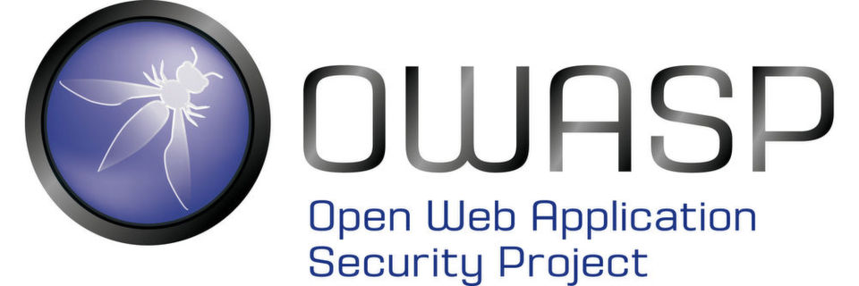
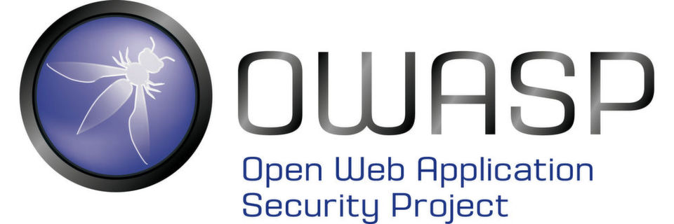

Google Summer of Code 2019 - Final Submission
Honeypots Introduction
In todays world there are many cyberattackers living on the internet and Dark web ,from beginner to experts.
All the systems which are deployed on the internet and scanned continuously by systems like "Shodan" and one can easily find the IP address and other details to find the system hosted on the internet,so the hackers come to you easily.
Shodan is the search engine for Internet connected devices i.e it scans the ports on the internet and analyzes which services are running and then displays it on "https://www.shodan.io/".
Here comes honeypots into play.
Honeypots are traps which are set to detect attempts at any unauthorized use of computer systems,with a view to learning from the attacks to further improve computer security.
Traditionally, one has to be still careful when using network based techniques like firewalls,intrusion detection systems and encryption.Nowadays,more advanced techniques like Honeypots are used, to get the knowledge about the hackers moves.
The main purpose for honeypots is to detect and learn from the attacks and further use the information to improve security.
Why Honeypots?
Most important usage of the honeypots is to monitor hackers moves in the system.As honeypots are just traps, the hacker would not be able to distinguish between a real system and a trap. The honeypots are designed in such a way that it would interact with the hacker and the hacker will never be able to distinguish between an honeypot trap and a real system. For example suppose an ssh server is setup in honeypot ,so it can be used to monitor the username and passwords what are used by the hackers while attacking an ssh server and then we can protect the actual sshd server running.Honeypots also collect the data which are useful to analyze the hacker activity and be ready to learn the attackers moves. In an honeypot there are ideally various services setup which are commonly used in information systems like sshd,http ,etc and so it can be useful to study the attacks on these services as they are widely used in almost all information systems. Also honeypots are cost effective as it just interacts with the attackers and does not require high-performance resource.
About the Honeypot Project
This is a project which I am working on,this project is sponsored by Open Web Application Security Project (OWASP). OWASP Python Honeypot is an open source project in Python language which is designed for creating honeypot and honeynet in an easy and secure way.There are basically modules in this project and each of them has services in it:
1. SSHD server : when you deploy OWASP honeypot, it will deploy two docker containers each one of them with an sshd server running.The difference between them is one of them has a weak password and the other one has a strong password. The weak password sshd server is used to monitor hacker activities like what commands does the hacker perform after getting logged in easily. The strong password sshd server is used to monitor what does hacker provides as username/passwords to get into the system.As the system has a randomly generated password , it would not be that easy to log in to the system .Also for each attempt to sshd login there are logs stored as to what is being used as username and password.
2. FTP server : There are two versions of this module namely weak password and strong password. The weak password is used to monitor what type of files /malware does the hacker upload once logged in easily to the system.The username and password is very easy to guess ,typically username as "root" and password as "123456" ,so the hacker can get in easily. The strong password is again used to monitor the username and password used to log in to the system and then also the type of file uploaded by the hacker.Each of these activities are logged in the docker container and on a timely basis sent to the database to store as a record. The database used in this project is MongoDB.
3. HTTP server : This module has also two versions of this module namely weak password and strong password. Weak passwords is used to monitor the requests on the server and also if the hacker is trying Denial of Service attacks it can be easily detected by this module. Strong passwords would again track the username and passwords used by the attacker to get into the system.
OWASP Honeypot is an open source software in Python language which designed for creating honeypot and honeynet in an easy and secure way!
 

My Work in GSOC
My work in GSOC period was to design the strategy for logging the information in the services of the project like SSH, FTP, HTTP. I fixed some of the existing bugs in the project and also added the strategy for logging the information in the services.SSH Service
In SSH service there are 2 versions : weak password and strong password. In strong password I added the script where we log all the credentials information from the hacker/user. In the weak version of the service we log all the information about the files that the user is trying to access after getting inside the container(service) because the password is quite easy to guess for this service(hence the name ssh_weak_password).FTP Service
In the FTP service also there are 2 versions : weak password and strong password. In weak password and strong password the idea is the same for logging. But the script for strong password differs in both the service because of the difference of the implementation of both the services.HTTP Service
In HTTP service I have added the logging of the creds and also the headers (which are sent to the HTTP server).Module Processor
In each of the service we have added a ModuleProcessor in the init file of each of the module. Each service is ran as docker container so the init file of each module contains the configuration of the container and also init file contains ModuleProcessor. ModuleProcessor does the job of put the logs created by the service into the database in a separate thread.Duplicated Code refactor
There was a lot of duplicated code in the api part of the project and one of my tasks in GSOC was to remove all the duplicated code from the project.Web Part
I also contributed a huge amount to web part of the project. I added many routes which were mentioned by Ali-Razmjoo (my mentor) and then added some routes to access the credentials informations which are obtained from the modules. I updated the wiki part of the project for documentation of the new routes. For example I added the route for getting the top usernames and passwords for each module. Finally I also added the table in the html page of the project to visualize the top usernames and passwords for each module.Links to my Work in GSOC Period
- HTTP Strong Password
- SSH Strong Password
- FTP Strong Password
- FTP/SSH weak password
- Credentials table and top usernames/passwords
- Duplicated Code Refactor
- Duplicated Code Refactor -2
- Adding new route
- Adding new route - 2
- Adding new route - 3
- Adding new route - 4
- Adding new route - 5
- Adding new route - 6
- Link to the bug solved
Here one can find all the commits done for the GSOC work : here
Status of the Project
I have completed most the tasks which were mentioned by me in the proposal. There are few PR's which needs a review from my mentor and they are the only tasks which are remaining.Not the End
I would like to thank my mentor Ali Razmjoo for being an awesome mentor and for the constant support and motivation. Had he not been so supportive, it would not have been a successful one.It has been a productive summer writing a lot of code and getting familiar with the open source community and practices. Ofcourse GSOC is not the end and I would continue contributing to the project after GSOC period too.
Thanks Google for organizing such an awesome program and looking forward to participate next year also.